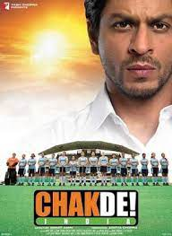
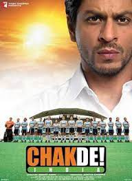
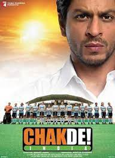

Early Life and Family
Khan was born on 2 November 1965 into a Muslim family in New Delhi.He
spent the first five years of his life in Mangalore, where his maternal
grandfather, Ifthikar Ahmed, served as the chief engineer of the port in
the 1960s.
Although Khan was given the birth name Shahrukh Khan, he prefers his
name to be written as Shah Rukh Khan, and is commonly referred to by the initialism SRK.
He married Gauri Chibber, a Punjabi Hindu, in a traditional Hindu
wedding ceremony on 25 October 1991, after a six-year courtship.They
have a son Aryan (born 1997) and a daughter Suhana (born 2000). In 2013,
they became parents of a third child, a son named AbRam, who was born
through a surrogate mother.
Both his elder children have expressed
interest in entering the entertainment industry; Khan has stated that
Aryan, who studied filmmaking at the USC School of Cinematic Arts in
California, aspires to become a writer-director, while Suhana, who
served as assistant director for Khan's film Zero (2018), is studying
drama and acting at NYU's Tisch School of the Arts for higher education.
Acting career
1992 - 1994
Film debut & Anti-hero


1995 - 1998
Anti-hero & Romantic Roles
1999 - 2003
Career challenges

2004 – 2009
Anti-hero & Romantic Roles

 


2015 – 2018
Romance
& Drama
2023
"I forgot the four year gap in last four days - PATHAAN "
Upcoming..
Upcoming..
Upcoming..
Upcoming..
Awards and recognitions
Khan is one of the most decorated Bollywood actors. He has received 14 Filmfare Awards from 30 nominations and special awards,including eight for Best Actor; he is tied for the most in the category with Dilip Kumar. Khan has won the Filmfare Best Actor award for Baazigar (1993), Dilwale Dulhania Le Jayenge (1995), Dil To Pagal Hai (1997), Kuch Kuch Hota Hai (1998), Devdas (2002), Swades (2004), Chak De! India (2007) and My Name Is Khan (2010). At times, he has garnered as many as three of the five total Filmfare Best Actor nominations.
Although he has never won a National Film Award, he was awarded the Padma Shri by the Government of India in 2005. The Government of France has awarded him both the Ordre des Arts et des Lettres (2007), and the fifth degree of the French Legion of Honour, the Chevalier Légion d'honneur (2014). Khan has received five honorary doctorates; the first from The University of Bedfordshire in 2009, the second from The University of Edinburgh in 2015, the third from Maulana Azad National Urdu University in 2016, and his latest from The University of Law and La Trobe University in 2019.
IPL cricket team
Bollywood superstar Shah Rukh Khan paid a huge amount to buy the IPL team Kolkata Knight Riders in 2008. It’s the third most successful team in the IPL with two trophies. Now the superstar has some big plans involving KKR
The franchise, which has gained immense popularity due to its association with celebrity owners, qualified for the IPL playoffs for the first time in 2011. They became the IPL champions in 2012, by defeating Chennai Super Kings in the final. They repeated the feat in 2014, defeating Kings XI Punjab.The Knight Riders hold the record for the longest winning streak by any Indian team in T20s
SRK FOREEVER
The franchise, which has gained immense popularity due to its association with celebrity owners, qualified for the IPL playoffs for the first time in 2011. They became the IPL champions in 2012, by defeating Chennai Super Kings in the final. They repeated the feat in 2014, defeating Kings XI Punjab.The Knight Riders hold the record for the longest winning streak by any Indian team in T20s
SRK FOREEVER